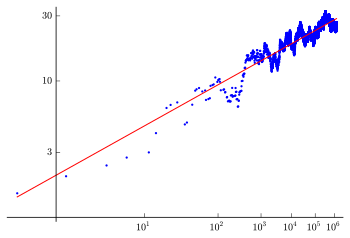
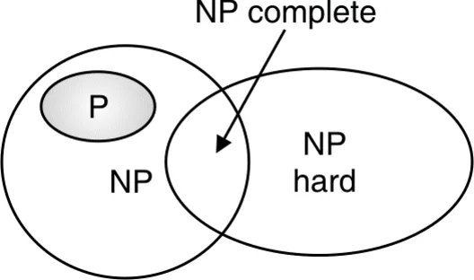
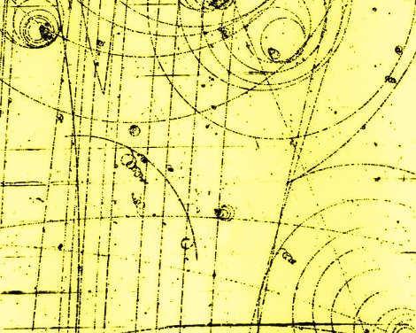
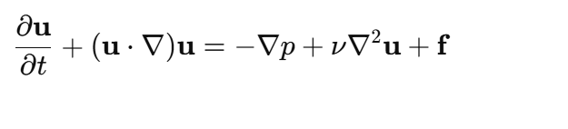

* A mathematical problem of the century is a significant, unsolved question in mathematics that challenges understanding and drives innovation
in the field. These problems often have deep theoretical and practical implications, influencing science, technology, and other disciplines.
Solving them typically requires groundbreaking insights and rigorous proofs, marking major milestones in mathematical progress.
Mathematicians have always been fascinated by the problem of describing all solutions in whole numbers x,y,z to algebraic equations like x2 + y2 = z2 .
Euclid gave the complete solution for that equation, but for more complicated equations this becomes extremely difficult. Indeed, in 1970 Yu. V. Matiyasevich

showed that Hilbert’s tenth problem is unsolvable, i.e., there is no general method for determining when such equations have a solution in whole numbers. But in
special cases one can hope to say something. When the solutions are the points of an abelian variety, the Birch and Swinnerton-Dyer conjecture asserts that the size of
the group of rational points is related to the behavior of an associated zeta function ζ(s) near the point s=1. In particular this amazing conjecture asserts that if ζ(1)
is equal to 0, then there are an infinite number of rational points (solutions), and conversely, if ζ(1) is not equal to 0, then there is only a finite number of such points.
More information at in here
In the world of computers and math, there's this puzzling question: Can every problem we quickly check be solved quickly too? We have two categories: P for problems with quick solutions,
and NP for problems where checking is fast, but solving might not be. This article explores these P vs NP problems, trying to understand why some things are easy to check but hard to figure
out, and why it matters for how computers work.

Some numbers have the special property that they cannot be expressed as the product of two smaller numbers, e.g., 2, 3, 5, 7, etc. Such numbers are called prime numbers, and they play an important role, both
in pure mathematics and its applications. The distribution of such prime numbers among all natural numbers does not follow any regular pattern. However, the German mathematician G.F.B. Riemann (1826 – 1866)
observed that the frequency of prime numbers is very closely related to the behavior of an elaborate function ζ(s) = 1 + 1/2s + 1/3s + 1/4s + … called the Riemann Zeta function. The Riemann hypothesis asserts
that all interesting solutions of the equation ζ(s) = 0 lie on a certain vertical straight line.
This has been checked for the first 10,000,000,000,000 solutions. A proof that it is true for every interesting solution would shed light on many of the mysteries surrounding the distribution of prime numbers.
More information
in here
The laws of quantum physics stand to the world of elementary particles in the way that Newton’s laws of classical mechanics stand to the macroscopic world. Almost half a century ago, Yang and Mills
introduced a remarkable new framework to describe elementary particles using structures that also occur in geometry. Quantum Yang-Mills theory is now the foundation of most of elementary particle theory, and its predictions
have been tested at many experimental laboratories, but its mathematical foundation is still unclear. The successful use of Yang-Mills theory to describe the strong interactions of elementary particles depends on a subtle
quantum mechanical property called the “mass gap”: the quantum particles have positive masses, even though the classical waves travel at the speed of light. This property has been discovered by physicists from experiment and
confirmed by computer simulations, but it still has not been understood from a theoretical point of view. Progress in establishing the existence of the Yang-Mills theory and a mass gap will require the introduction of fundamental
new ideas both in physics and in mathematics.More information in here

Navier-Stokes Existence and Smoothness is one of the most famous unsolved problems in mathematics, specifically in the field of fluid dynamics. The problem concerns the existence and smoothness of solutions to
the Navier-Stokes equations, which describe the motion of fluids or gases. First introduced in the 19th century by Claude-Louis Navier and George Gabriel Stokes,these equations are fundamental in various scientific and engineering applications.
More information in here

where:
The Hodge Conjecture is a major unsolved problem in algebraic geometry, proposed by W.V.D. Hodge. It suggests that certain topological classes (cohomology classes) of complex algebraic varieties can be represented by algebraic cycles,
which are formal sums of subvarieties. Specifically, it predicts that for certain types of algebraic varieties, every "nice" cohomology class can be associated with an algebraic cycle.
The conjecture connects topology (cohomology) and geometry (algebraic cycles), helping to deepen our understanding of the structure of algebraic varieties. While it has been proven in some special cases, the general conjecture remains unproven and is one of
the significant open problems in mathematics.More information
in here
The Poincaré Conjecture is a famous problem in topology, proposed by Henri Poincaré in 1904. It deals with the classification of 3-dimensional spaces, specifically in the context of manifolds. The conjecture states:
Every simply connected, closed, 3-dimensional manifold is homeomorphic to the 3-dimensional sphere.
Key Terms: